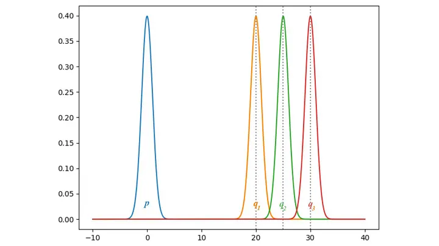
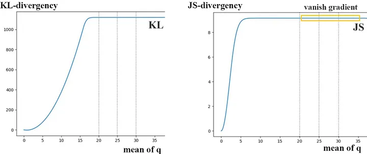
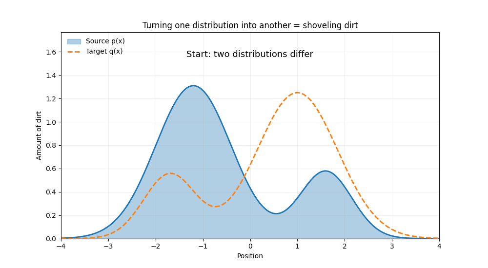
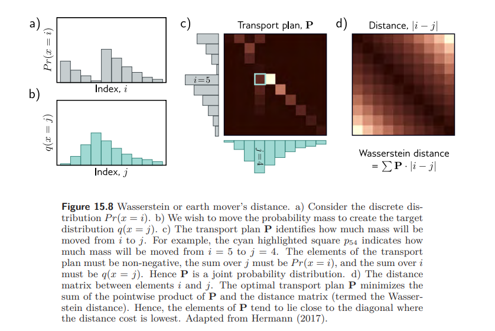

The Wasserstein GAN
1. The Vanishing Gradient Problem
A regular GAN's discriminator is a binary classifier- it squashes its output through a sigmoid to get a "probability that this sample is real." That sigmoid is exactly where a subtle problem starts.
A sigmoid curve is only steep in the middle. Out at the flat ends- close to 0 or close to 1- it barely changes at all, no matter how much its input changes. If the discriminator has gotten good at its job, it pushes every fake sample's score down near 0 and every real sample's score up near 1. Both groups end up sitting on the flat parts of the curve.
Here's a diagram that shows this happening. The orange arrows are generated (fake) samples, the cyan arrows are real samples, and the gray S-curve is the discriminator's sigmoid output:
Both groups of samples sit on the flat ends of the sigmoid. Nudging a fake sample slightly barely moves its score - the slope right there is nearly zero.
That slope is exactly what the generator relies on to learn. Its only feedback is: "if I change my output a little, does the discriminator's score change?" When every sample lands on a flat stretch of the sigmoid, the answer is "barely at all"- so the gradient flowing back to the generator is tiny, and its weights barely update. This is the vanishing gradient problem.
We might guess this only happens when the discriminator is "too good." But there's a deeper reason it happens almost inevitably. Generated samples all come from passing noise \(z\) through the generator, so they live on a comparatively low-dimensional slice of the full data space- and real data, shaped by whatever physical process created it, often lives on its own low-dimensional slice too. Those two slices can easily end up barely touching, or not touching at all. When that happens, the discriminator doesn't just get good- it gets perfect, and stays perfect, no matter how the generator nudges its output. There's simply no gradual "getting closer" that the discriminator can register.
A quick example
Take a fixed distribution \(p\) (blue, centered at 0) and a moving distribution \(q\) that we slide further and further away- centered at 20, then 25, then 30. None of these ever overlap with \(p\):

Now plot each divergence as \(q\) slides from 20 to 30. KL divergence keeps climbing before flattening out; JS divergence flattens out almost immediately:

Look at the region where \(q\) is at 20, 25, and 30 (the dotted lines). JS divergence is already flat across that entire stretch. Both KL and JS can't tell 20 from 30, because both are "completely disjoint from \(p\)" as far as KL and JS are concerned. That flat line has zero slope, so there's no gradient to push \(q\) back toward \(p\).
The real issue is what the GAN loss is secretly measuring- KL or JS divergence between two distributions. As the example above shows, once two distributions are disjoint, these divergences stop responding to how far apart they actually are. The gradient dies regardless of the discriminator's exact architecture.
So we need to find a better distance metric- one that stays smooth and informative even when the two distributions don't overlap, and that keeps shrinking smoothly as the generator gets closer to the real data. That's exactly what the Wasserstein distance gives us.
2. Earth Mover's Intuition
The Wasserstein distance - or, the earth mover's distance - is the quantity of work required to transport the probability mass from one distribution to create the other. Here, "work" is defined as the mass moved, multiplied by the distance it's moved over.
Picture each distribution as a pile of dirt. Turning one pile into the other means shoveling dirt from wherever it currently sits to wherever it needs to end up - and the total work is exactly that sum of mass times distance, added up over every shovelful.

The blue pile \(p(x)\) is reshaped into the dashed target \(q(x)\).
This immediately sounds more promising than a pointwise density comparison: the Wasserstein distance is well-defined even when the two distributions are disjoint, and it decreases smoothly as they become closer to one another. A KL or JS divergence, by contrast, can be flat, infinite, or undefined in exactly this regime.
3. The Discrete Case
The Wasserstein distance is easiest to understand for discrete distributions. Suppose we have two distributions, \(Pr(x=i)\) and \(q(x=j)\), each defined over \(K\) bins.
There is a cost \(C_{ij}\) associated with moving a unit of mass from bin \(i\) in the first distribution to bin \(j\) in the second. The simplest choice- and the one used here- is the absolute difference between the indices, \(|i-j|\).
The amounts of mass that get moved between every pair of bins form what's called the transport plan, and they're stored in a matrix \(\mathbf{P}\).
subject to the constraints that:
What does \(\min_{\mathbf{P}}\) actually mean?
\(\mathbf{P}\) isn't a single number- it's a whole matrix, with one entry \(P_{ij}\) for every pair of bins \((i,j)\). Each entry answers one question: "how much mass do I move from bin \(i\) to bin \(j\)?"
So \(\min_{\mathbf{P}}\) means: search over every possible matrix \(\mathbf{P}\)- every possible way of shuffling mass around- compute the total cost \(\sum_{i,j}P_{ij}\cdot|i-j|\) for that particular shuffling, and pick the matrix that makes the total cost as small as possible.
Think of bin \(i\) as a warehouse and bin \(j\) as a store. You need to decide how many boxes go from each warehouse to each store. Many different delivery plans could work- \(\min_{\mathbf{P}}\) is choosing the cheapest one, where cost = (boxes moved) × (distance travelled).
Why do the constraints matter?
Not every matrix \(\mathbf{P}\) is allowed. You can't just move mass however you like- you have to respect where the mass starts and where it needs to end up. That's exactly what the two constraints enforce:
\(\sum_j P_{ij} = Pr(x=i)\)
Add up everything leaving bin \(i\), across all destinations \(j\). It must equal how much mass bin \(i\) actually had to begin with. You can't move out more than a bin contains, and you can't leave any of it behind- all of it has to go somewhere.
\(\sum_i P_{ij} = q(x=j)\)
Add up everything arriving at bin \(j\), from all sources \(i\). It must equal how much mass bin \(j\) is supposed to end up with.
Without these two constraints, the minimization would be trivial and meaningless- the optimizer could just set \(\mathbf{P}=0\) everywhere and call it a day, since "moving nothing" is obviously the cheapest option. The constraints are what force \(\mathbf{P}\) to represent a valid transformation of \(Pr(x)\) into \(q(x)\), rather than an arbitrary, unconstrained cost.
Both \(Pr(x)\) and \(q(x)\) get labeled "initial distribution" in the constraints- which makes it sound like \(q(x)\) is also a starting point. It isn't. Here, "initial" just means "given to us before we start solving the problem"- both distributions are fixed, known inputs, the same way any optimization has "given" data. It's not describing a timeline of mass moving from A to B. \(Pr(x)\) is the source (mass leaves these bins); \(q(x)\) is the target (mass arrives in these bins). Both constraints do the same kind of job- pinning \(\mathbf{P}\)'s marginals to a known distribution- one for where mass leaves from, one for where it has to land.
Put together: \(D_w\) is the cheapest way to reshape the pile \(Pr(x)\) into the pile \(q(x)\), where "reshape" is defined precisely by those row/column constraints, and "cheapest" is exactly what \(\min_\mathbf{P}\) searches for.
4. The Transport Plan, Visually
It helps to see all four pieces of this problem laid out together- the two distributions, the transport plan, and the distance matrix:

a) The source distribution \(Pr(x=i)\). b) The target distribution \(q(x=j)\). c) The transport plan \(\mathbf{P}\)- the highlighted square \(P_{54}\) shows how much mass moves from bin \(i=5\) to bin \(j=4\). d) The distance matrix \(|i-j|\), smallest along the diagonal.
a) and b): the two distributions
\(Pr(x=i)\) is a histogram over bins indexed by \(i\); \(q(x=j)\) is a histogram over bins indexed by \(j\). These are the starting and target "piles of dirt"- fixed and known before we solve anything.
d): the distance matrix
A \(K\times K\) matrix with entries \(|i-j|\), giving the cost of moving one unit of mass from bin \(i\) to bin \(j\). It's smallest near the diagonal, where \(i\approx j\), and grows the further apart the bins are.
c): the transport plan \(\mathbf{P}\)
\(\mathbf{P}\) is itself a joint probability distribution over \((i,j)\): each entry \(P_{ij}\) tells you how much mass moves from bin \(i\) to bin \(j\). For example, the highlighted entry \(P_{54}\) is the amount of mass moved from bin \(i=5\) to bin \(j=4\). Every entry must be non-negative; summing across a row recovers \(Pr(x=i)\), and summing down a column recovers \(q(x=j)\)- exactly the two constraints from the previous section.
Since the objective minimizes \(\sum_{ij}P_{ij}\cdot|i-j|\), the optimizer naturally prefers to put mass where the cost \(|i-j|\) is small- that is, close to the diagonal, where a bin is mostly transported to itself or a nearby bin. Moving mass far away is only worth it when there's no cheaper option. That's exactly the pattern visible in panel c) above: the bright, high-mass entries of \(\mathbf{P}\) hug the diagonal.
5. It's a Linear Program
This minimization is inconvenient to work with directly: we'd have to solve for every element \(P_{ij}\) of the transport plan every single time we want to compute the distance. Fortunately, this is a well-studied kind of problem- a linear programming problem, in what's called its primal form.
Linear programs have standard, well-understood algorithms for finding the minimum, and- crucially- every linear program has an equivalent dual formulation that reaches the exact same solution from a different angle. That dual form turns out to be far more useful for machine learning.
6. Primal vs. Dual Form
Written as a generic linear program, the transport problem looks like this:
| Primal form | Dual form |
|---|---|
|
minimize \(\mathbf{c}^T\mathbf{p}\) such that \(\mathbf{A}\mathbf{p}=\mathbf{b}\) and \(\mathbf{p}\geq 0\) |
maximize \(\mathbf{b}^T\mathbf{f}\) such that \(\mathbf{A}^T\mathbf{f}\leq\mathbf{c}\) |
Here \(\mathbf{p}\) contains the vectorized entries \(P_{ij}\)- the amount of mass moved between every pair of bins. \(\mathbf{c}\) contains the distances. \(\mathbf{A}\mathbf{p}=\mathbf{b}\) encodes the two initial-distribution constraints, and \(\mathbf{p}\geq0\) enforces non-negative mass.
The dual problem maximizes over a new variable \(\mathbf{f}\) that acts directly on the initial distributions, subject to constraints that depend on the distances \(\mathbf{c}\) instead of on the transport plan itself.
For the Wasserstein distance specifically, this primal–dual equivalence is known as the Kantorovich–Rubinstein duality. It's the result that lets us swap "search over every transport plan" for "search over one Lipschitz-constrained function \(f\)" - and it's the piece of theory that Wasserstein GANs lean on when they train a critic network in place of a discriminator. For a deeper dive into where this duality comes from, these two write-ups are worth a read:
7. The Dual Form, Explicitly
Applied to our discrete Wasserstein problem, the dual form is:
subject to the constraint that:
In other words, we now optimize over a new set of variables \(\{f_i\}\)- one scalar per bin- instead of over the full \(K\times K\) transport plan \(\mathbf{P}\). The only requirement on \(\mathbf{f}\) is that adjacent values cannot change by more than one at a time.
The primal form asks us to solve for an entire matrix of transport amounts. The dual form asks us to solve for a single function \(f\) over the bins- a much smaller, more tractable object. This is the version that generalizes cleanly to neural networks, as we'll see next.
8. Extending to Continuous Distributions
Translating these results from discrete bins to the continuous, multi-dimensional setting, the primal form (Equation 1) becomes:
subject to constraints analogous to before, where the transport plan \(\pi(\mathbf{x}_1,\mathbf{x}_2)\) now represents the mass moved from continuous position \(\mathbf{x}_1\) to position \(\mathbf{x}_2\).
And the dual form (Equation 2) becomes:
subject to the constraint that the Lipschitz constant of the function \(f[\mathbf{x}]\) is less than one- that is, the absolute gradient of the function is everywhere less than one.
The discrete condition \(|f_{i+1}-f_i|<1\) was simply a statement that \(f\) can't change too abruptly between neighboring bins. The Lipschitz constraint is the exact continuous analogue of that same idea: \(f\) isn't allowed to change faster than one unit of output per unit of input, in any direction. This is what keeps the dual "critic" function well-behaved instead of blowing up.
Because the dual form is just a maximization over some function \(f[\mathbf{x}]\) subject to a smoothness constraint, we can approximate \(f\) with a neural network and train it with gradient ascent- this is precisely the role played by the "critic" in a Wasserstein GAN, in place of the discriminator's probability output.
9. The Wasserstein GAN Loss Function
So far this has all been theory about distributions \(Pr(x)\) and \(q(x)\). To actually train a network, we need to turn the dual form into something we can compute on a batch of samples.
Recall the dual objective was a maximization over some function \(f\). In a Wasserstein GAN, that function is played by a neural network - call its parameters \(\phi\) - and instead of integrating over the true densities, we just plug in the samples we actually have: real examples \(x_i\), and generated examples \(\mathbf{x}_j^*=g[\mathbf{z}_j,\theta]\) produced by the generator \(g\) from noise \(\mathbf{z}_j\).
Notice this network \(f\) doesn't output a probability anymore - there's no sigmoid squashing it into \([0,1]\). It's usually called the critic rather than the "discriminator," and it just outputs a raw score. Training pushes the critic to give high scores to real data and low scores to generated data, and the gap between the two averages is the (approximate) Wasserstein distance.
But there's a catch: the dual form was only valid under one condition - the Lipschitz constraint. Translated to the critic network, that means its gradient with respect to the input can never exceed 1 in magnitude, at any point in space:
Without this constraint, the critic could just keep pushing real scores up and fake scores down forever - the objective would grow without bound and training would never converge to anything meaningful. The Lipschitz condition is what keeps the critic honest and keeps \(L[\phi]\) actually tracking the Wasserstein distance.
Enforcing the constraint: weight clipping
The original WGAN paper's fix was blunt but simple: after every update, clip every weight in the critic to a small fixed range, e.g. \([-0.01,\,0.01]\). Bounding the weights this way indirectly bounds how steep the network's output can get, so it approximately enforces the Lipschitz condition.
It works, but it's a crude tool. Clipping tends to push the critic toward learning very simple, close-to-linear functions, and picking the clipping range is finicky - too wide and the constraint barely holds, too narrow and the critic loses so much capacity that gradients through it start vanishing again, undoing the whole point of switching to Wasserstein in the first place.
A better fix: WGAN-GP
WGAN-GP ("gradient penalty") replaces clipping with a softer, more direct approach: instead of forcing the constraint through the weights, it adds a penalty term to the loss that discourages the critic's gradient norm from drifting away from 1.
WGAN (weight clipping)
Hard-clips every weight after each step. Simple to implement, but can make the critic too simple, is sensitive to the clip range, and can still leave the Lipschitz constraint violated or over-enforced in practice.
WGAN-GP (gradient penalty)
Adds a loss term penalizing \(\left(\|\nabla_{\mathbf{x}}f[\mathbf{x},\phi]\|-1\right)^2\), computed at points interpolated between real and generated samples. Lets the critic use its full capacity while nudging its gradient norm toward exactly 1, rather than capping it indirectly.
- It constrains the gradient directly, which is what the theory actually asks for - clipping weights was always just an indirect proxy.
- The critic keeps its full expressive power instead of being squeezed toward near-linear behavior by tiny weight ranges.
- Training becomes noticeably more stable and less sensitive to hyperparameter choices - no more hunting for the "right" clipping range.
- In practice, it tends to produce sharper samples and cleaner convergence behavior than weight-clipped WGAN.
10. Key Takeaways
- The Wasserstein distance measures the minimal work needed to transform one distribution into another, where work = mass moved \(\times\) distance moved.
- In the discrete case, this is a minimization over a transport plan matrix \(\mathbf{P}\), constrained to reproduce both original distributions as its row and column sums.
- This minimization is a linear program in primal form- standard, but expensive to solve directly for every comparison.
- Its dual form replaces the transport plan with a single function \(f\), constrained so that adjacent values (or, in continuous space, the gradient) can't change too fast- a Lipschitz constraint.
- This dual form is what makes the Wasserstein distance practical for deep learning: \(f\) can be approximated by a neural network trained via gradient ascent, forming the basis of Wasserstein GANs.
Unlike KL or JS divergence, the Wasserstein distance stays smooth and meaningful even when two distributions don't overlap- exactly the property that makes it attractive for stabilizing generative model training.